[N-World Contents] [Book Contents] [Prev] [Next] [Index]
Making a Walk Cycle
Making a basic walk cycle is simple in the Skeletal Animation System. This chapter describes how to create pose to pose animations, loop motion like a walk cycle, and use the N-Dynamics Lock Feet operation.
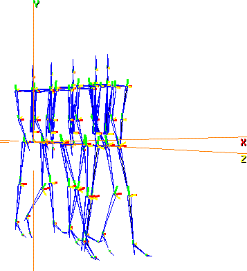
In this Chapter
You'll learn how to:
Creating a Walk Cycle
Just as traditional animators create animations by generating several poses for a character and animating between them, you can create and save any number of poses for a skeleton and use different techniques to animate between them.
There are two typical ways of creating walk cycles from scratch (that is, without using motion capture data):
Both of these options are described below
Walk Cycle 1: Using IK Operations
Creating a walk cycle in the Skeletal Animation System is simple now that you know how to pose a skeleton. In this section, you'll use some of the IK posing techniques discussed earlier to create poses, then animate the skeleton using a pose-to-pose animation.
1. Create a new skeleton.
- (CLICK-L) on GeoMenus>New Object>Skeleton.
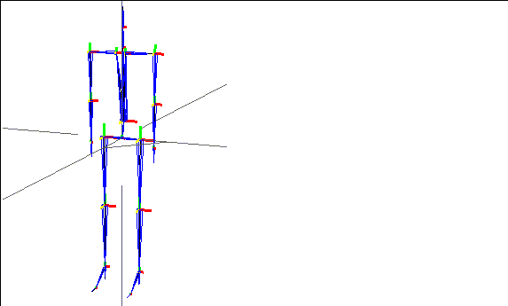
Figure 7.1 Skeleton primitive
To create this animation, you'll break the walk cycle into a number of poses. To create each pose, use the appropriate IK move.
2. (SHIFT-L) on the left ankle bone of the skeleton, then (CLICK-L) on IK Move thru Root.
3. (CLICK-L) on the right ankle node to pin it, then (CLICK-R).
- Pose the skeleton.
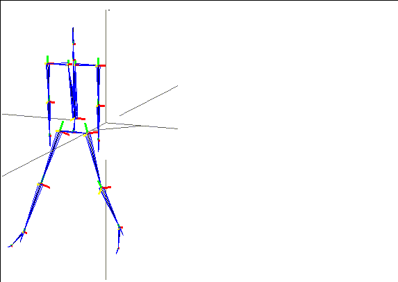
Figure 7.2 Pose the skeleton using one of the IK operations
4. (CLICK-L) on bodies on the element sensitivity menu.
5. (SHIFT-L) on the skeleton, then (CLICK-M) on Pose.
- The following dialog box is displayed:
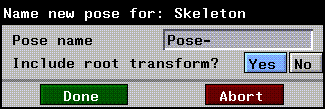
Figure 7.3 Saving the pose
- Enter a name for the pose.
- Make sure that Include root transform? is set to Yes. This puts the rotations and translations of the skeleton's root (with respect to the base state) into the pose, as well the local bone rotations.
6. Create a script in N-Dynamics with two channels.
7. (CLICK-M) on the first channel.
8. (CLICK-M) on the second channel.
- Your script should now look something like this:
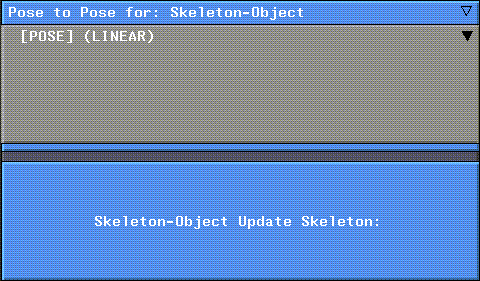
Figure 7.4 Pose to pose script
9. (CLICK-L) on the curve channel under the Animate Pose to Pose channel.
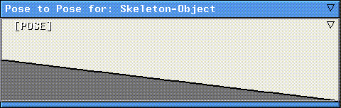
Figure 7.5 Open the curve channel
10. Move the cursor over the curve channel.
- Press the "s" hot key to insert a cue at the frame where a pose should be executed.
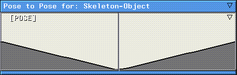
Figure 7.6 Inserting a cue
11. (CLICK-M) on the cue.
- A list of poses saved with the skeleton are displayed:
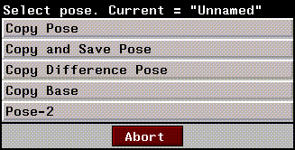
Figure 7.7 Selecting a pose
12. (CLICK-L) on the pose that should executed at this frame.
13. (CLICK-L) on the Animate button in N-Dynamics.
- The skeleton starts in its base position, animates to the saved pose, then returns.
14. (CLICK-L) on the Playback button to see your animation.
To create an entire walk cycle, simply continue creating additional poses using the various IK operations. For each pose, create a new cue in the Animate Pose to Pose channel. Then, copy each new pose into the appropriate cue and reanimate.
Walk Cycle 2:
Kinematic Poses with Translation
In the script above, we used poses that included transformations. For each pose in the jump example, we transformed the skeleton, then posed individual bones to create the poses.
Remember that N-Dynamics animates a skeleton (and other objects) by transforming it. If you want to pose a skeleton that was posed using the pose editor, you'll need to supply some other sort of animation data. In the example below
Let's take a look at another script that makes a skeleton walk forward in a straight line. Try this:
1. Load the following script:
/usr/local/ngc/demo/scripts/walk-cycle
There are four channels in this script:
In this script, we created seven different poses for the skeleton to build a simple walk cycle; we loaded a skeleton primitive, then used the Pose Editor to pose the skeleton while in its root position.
If you use the Pose command to view the different saved poses for the skeleton, you'll see that they are all centered around the global axis.
Try this:
2. (CLICK-L) on the Animate button in the N-Dynamics window.
- The skeleton animates through the various saved poses, but its root remains fixed at the global coordinates:
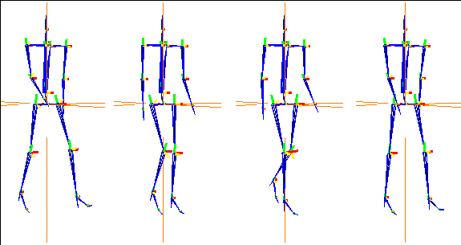
Figure 7.8 Posing a skeleton does not transform it; to move a skeleton in 3D space, you must somehow transform the root of the skeleton
- As described in the previous section, N-Dynamics animates the object according to its transformation matrix; using the Pose Editor to pose a skeleton does not change its transformation matrix!
3. Move the cursor over the Z Move channel.
4. Press "a" on the keyboard to activate the channel.
5. (CLICK-L) on the Animate button in the N-Dynamics window.
- This channel contains a simple Z Move operation, selecting the skeleton as the object to be updated. When you animate the skeleton this time, it moves along the Z axis; we modified the distance of the Z move until it looked right.
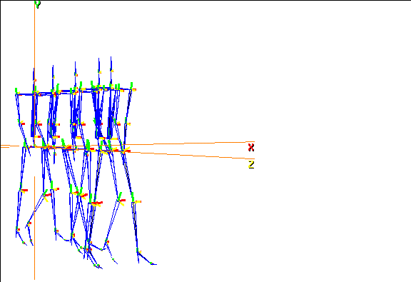
Figure 7.9 Adding a translate to the script moves the skeleton in space; various poses are "hit" at specified points in time
Jumping Skeleton
Suppose for example, you want to animate a skeleton jumping up into the air. There are four basic steps to animating a pose-to-pose animation:
Let's take a look at a sample script that makes a skeleton jump up and down. Try this:
1. Load the following script:
/usr/local/ngc/demo/scripts/jumping-skeleton
2. (CLICK-L) on the second channel.
- It should look something like this:
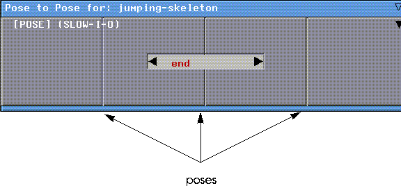
Figure 7.10 Dynamic channel containing poses
- Each of the vertical lines in the channel is a cue which holds a pose; in addition, both the start and ending of the channel
3. (CLICK-L) on the [POSE] subchannel.
- The curve channel opens. It should look something like this:
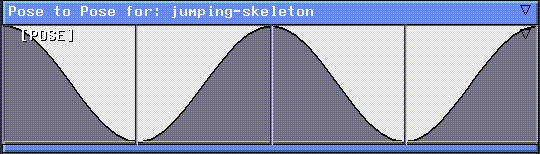
Figure 7.11 Curve data for poses
- To see which pose each cue contains, you can (CLICK-M) on the cue; its name appears in the middle of the channel:
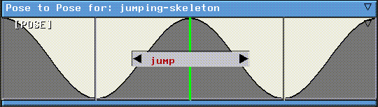
Figure 7.12 Checking which pose a cue contains
- If you want to assign a different saved pose to a cue, either (SHIFT-M) on the cue or (CLICK-L) on the text box (if displayed at the center of the channel). A menu appears, listing any poses saved with the skeleton, plus the option of Copy Pose at the top of the menu:
Figure 7.13 Checking which pose a cue contains
- The Copy Pose option is described below in the section "Copying Poses from N-Geometry," on page 7-16.
- By default, the pose at the beginning and end of the script are assumed to be the base position for the skeleton. If you check each of the cues, you'll see that they go like this:
- base - squat - jump - squat - end
- The skeleton starts in a standing position, squats down, then jumps; he lands and squats down to absorb the impact, then stands again.
- Note. Remember that N-Dynamics animates by transforming objects. If you want the skeleton to move in 3D space, you must transform the root of the skeleton; both the "squat" and "jump" poses were created by transforming the skeleton, then modifying it.
Viewing or Editing All Cues in a Channel
If you want to quickly view which poses are assigned to the cues in a given channel:
1. (CLICK-R) on the channel containing the cues.
2. (CLICK-L) on the Edit all Cue Values operation.
- A dialog box appears, showing the times in the script at which each cue occurs and the name of the pose in that cue:
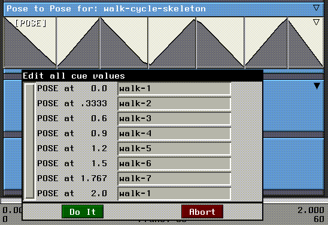
Figure 7.14 Editing multiple cues at once
3. (CLICK-L) on one of the poses.
- A list of other poses saved that can be assigned to the cue is displayed:
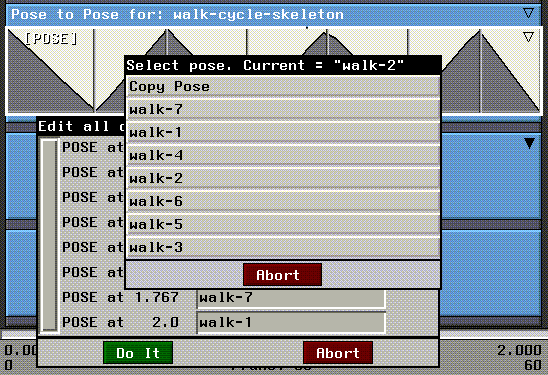
Figure 7.15 Selecting a pose
4. (CLICK-L) on the pose you want to use for the selected cue.
This is a handy way for quickly viewing which poses are assigned in a channel, and for reassigning several poses to several cues at the same time.
Moving Cues
If you think the skeleton is squatting down to soon, or should jump earlier or later, you can move the poses forward or back in time by sliding them left or right in the channel.
Suppose you think the skeleton should squat earlier in the script. Try this:
1. (DRAG-L) on the cue.
- Move the cue left to the left so that the channel looks like this:
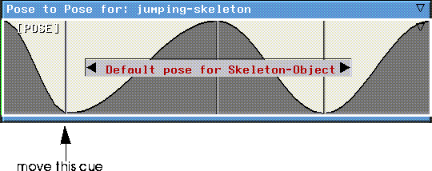
Figure 7.16 Moving cues
2. (CLICK-L) on the Animate button in the N-Dynamics window.
- The skeleton jumps again; however, this time he squats down very early in the animation; more frames elapse between the time he hits the "squat" pose and the "jump" pose.
Adding Cues (Poses)
There is no limit to the number of poses you can specify for a skeleton in an animation; in this example we used five poses to create a simple jumping motion. Adding more cues would give you more control, allowing you to create more complex motions.
To add a pose to an animation:
1. Move the cursor over the curve channel for the Pose to Pose channel.
2. Press "s" on the keyboard to add a cue at the cursor's current frame.
- You can repeat this process wherever you want to insert a new cue:
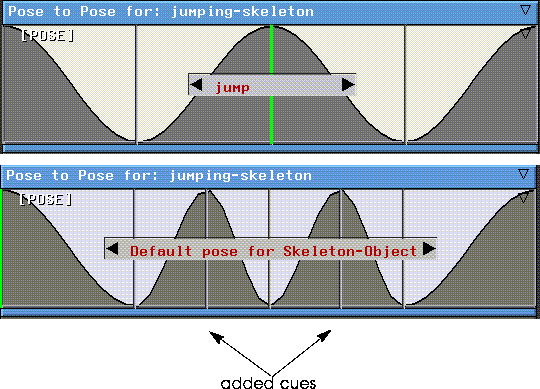
Figure 7.17 Top, original channel; bottom, with two additional cues added
- At each point where you insert a cue, you can assign a pose for the skeleton. Try adjusting the poses so that you have this order:
- base - squat - jump - squat - jump - squat - end
- This makes the skeleton jump twice in the same amount of time originally alotted for the animation.
Respacing Cues Evenly
If you add a number of cues and decide that you want to space them apart evenly over the animation:
1. (CLICK-R) on the curve channel containing the cues.
- The Curve Operations menu appears.
2. (CLICK-L) on the Respace Cues command.
- The cues are spaced even distances from each other in the channel.
Manipulating cues is discussed in more detail in the N-Dynamics Reference Guide.
Copying Poses from N-Geometry
The additional poses you copy into a cue can be created using the various commands in SAS or using the Pose Editor interface. If you want, you can save the skeleton's current pose in the N-Geometry window as a pose and copy it into a cue:
To copy the current pose into a cue:
1. Pose the skeleton.
2. (SHIFT-M) on a cue.
- At the top of the menu is an option called Copy Pose:
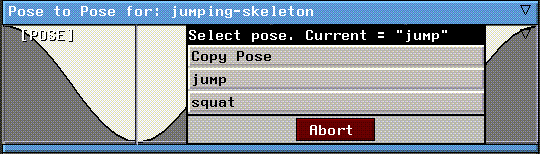
Figure 7.18 Checking which pose a cue contains
3. (CLICK-L) on Copy Pose.
- The following dialog box appears:
Figure 7.19 Saving the pose
4. Enter the name for the pose.
- This saves the pose withthe skeleton and assigns it to the selected cue.
5. (CLICK-L) on the Animate button again.
- The new pose is incorporated into the new animation.
- Note. The Copy Pose option is also available when you use the Edit all Cue Values command when you (CLICK-R) on a channel containing several poses.
Congratulations!
You've now learned several techniques for generating simple animations like a walk cycle or a jump.
[N-World Contents] [Book Contents] [Prev] [Next] [Index]
 Another fine product from Nichimen documentation!
Another fine product from Nichimen documentation!
Copyright © 1996, Nichimen Graphics Corporation. All rights
reserved.